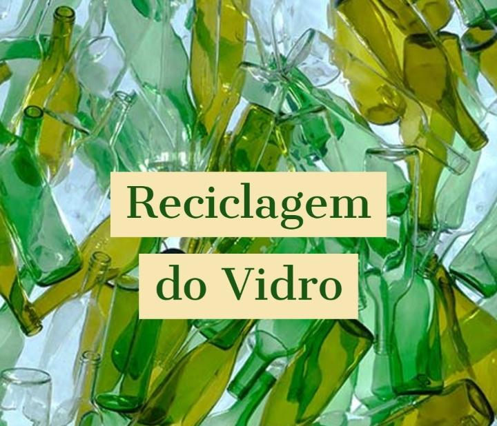

Conscientização e Geração de Renda através de Projetos Socioambientais é a prova de que podemos sim, ter um mundo melhor.
Aqui você aprende a fazer lindas peças de Artesanato com materiais reaproveitados.
Sejam Bem Vindos ao Projeto Resíduo Lucrativo!!
A importância da reciclagem do vidro, processo limpo e barato que garante o aproveitamento completo do material.

E, mesmo não agredindo o meio ambiente, sabemos que o vidro precisa ser
descartado da maneira correta já que não se degrada na natureza.
Os cacos de vidro, produzidos pela quebra de copos e garrafas no ambiente
doméstico, por exemplo, são altamente cortantes. Esse tipo de material,
quando manuseado de maneira incorreta, pode causar uma série de acidentes.
Logo, precisa ser descartado de maneira consciente.
Mas qual é a maneira mais segura de fazer o descarte do vidro?
1 A melhor maneira de descartar esses resíduos é agrupá-los em jornal, caixas de leite
ou caixas de papelão, evitando que o material fique diretamente em contato
com sacolas plásticas na hora do descarte. Isso diminui o risco de cortes
proporcionado pelo contato com os cacos e faz com que as sacolas não se
rasguem, dispersando pedaços cortantes em qualquer lugar.
2 O procedimento, iniciado em segurança em casa, também garante a segurança
dos coletores de material reciclável, principalmente se o vidro descartado
estiver bem separado dos demais resíduos.
3 Depois de embalar corretamente e de forma segura o vidro,
você também precisa destiná-lo ao lugar correto para garantir
que ele seja reciclado. Em muitas cidades e regiões, há o serviço de
coleta seletiva de material reciclável da prefeitura, onde o caminhão
passa algum dia da semana na sua rua e você pode colocar o vidro ali.
4 Caso onde você mora não tenha esse serviço, outra opção é destinar
o vidro a algum posto de coleta e reciclagem próximo a sua casa.
5 Em alguns casos, como é o do vidro temperado, ele não é reciclável e por
isso pode ser descartado no lixo normal.
6 Lembre-se sempre também que outros tipos de vidro, como os de aparelho
celular, monitor, e outros devem ser descartados como lixo eletrônico.
E lâmpadas, apesar de serem de vidro, também são descartadas de maneira
diferente.